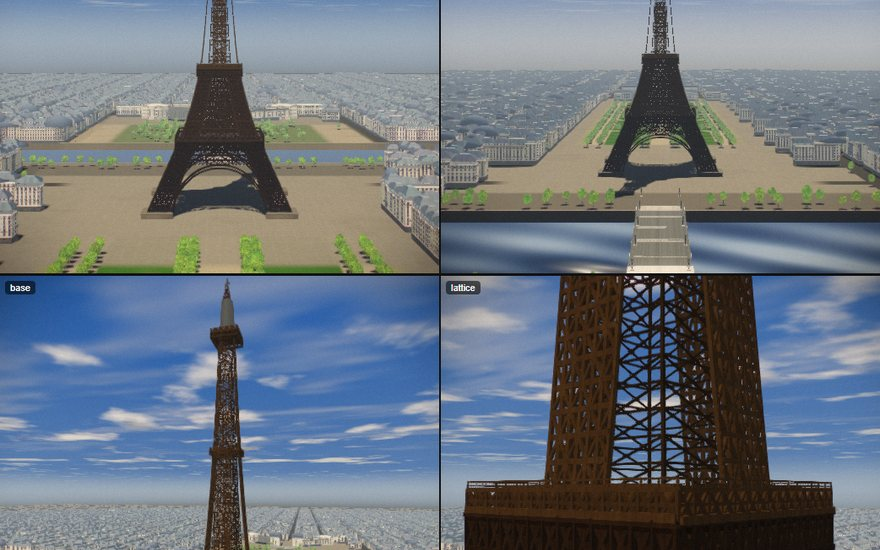

31.3 MB · 62 filesGenerational engine · Three.js + GLSL
Eiffel — Production
The main Eiffel experiment: source fragments, a build pipeline, diagnostics, performance probes, screenshot tooling, a self-contained dist build, and the iteration renders.